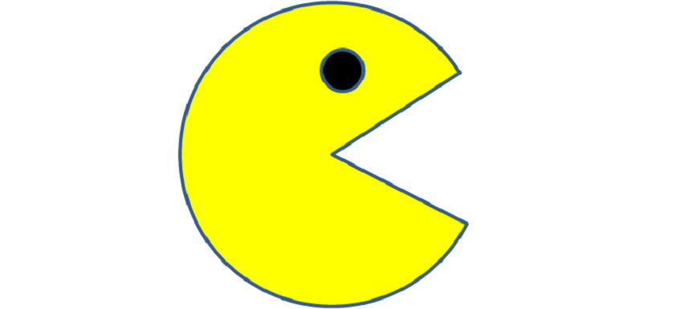
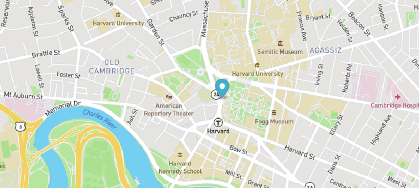

Portfolio Projects

Pac-Man Exercise
In this project, Pac-Man will run back and forth across the screen when you click on him. Clicking him more makes him go faster. It uses HTML and JavaScript. JavaScript is used to populate the CSS.
Eye Movement Exercise
In this project, eyes will follow the movement of the mouse when it is over the page. This uses HTML, CSS, and JavaScript.

Real Time Bus Tracker Exercise
In this project, map markers are animated to move to follow a bus route. This uses HTML, CSS, and JavaScript as well as Mapbox.